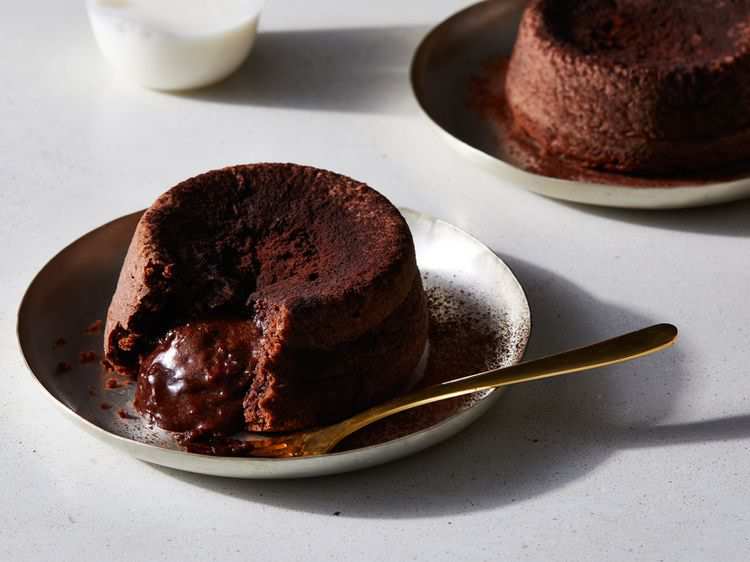

Petit Gâteau

Description
Make the original, supremely rich version of the iconic molten chocolate
cake, created by Jean-Georges Vongerichten, in 35 minutes.
Ingredients
-
1/2 cup (4 ounces) unsalted butter, cubed, plus more for greasing the
ramekins
-
2 tablespoons all-purpose flour, plus more for dusting the ramekins
-
6 ounces bittersweet chocolate, preferably 66% cacao Valrhona, chopped
(about 1 cup plus 1 1/2 tablespoons)
- 2 large eggs, room temperature
- 2 large egg yolks, room temperature
- 1/4 cup sugar
- 1/4 teaspoon kosher salt
Steps
- Gather the ingredients.
-
Preheat oven to 450°F. Butter and lightly flour four 6-ounce ramekins.
Tap out excess flour. Set the ramekins on a baking sheet.
-
Fill a medium saucepan with water to a depth of 1 inch; bring to a boil
over medium-high, and reduce heat to medium-low to maintain a simmer.
Combine chocolate and butter in a medium-size heatproof bowl, and set
bowl over simmering water in pan, making sure bottom of bowl doesn’t
touch water. Cook over medium-low, stirring occasionally and adjusting
heat as needed to maintain a simmer, until chocolate mixture is melted
and smooth, 16 to 20 minutes. Remove from heat, and set aside.
-
Beat eggs, egg yolks, sugar, and salt in a medium bowl with an electric
mixer fitted with the whisk attachment on high speed until thickened and
pale, 2 to 3 minutes
- Whisk melted chocolate until smooth.
-
Quickly fold melted chocolate mixture and flour into egg mixture in bowl
until well combined and no streaks remain.
-
Spoon batter into prepared ramekins (about 1/2 cup per ramekin) and
smooth the top using a small offset spatula if needed. Place baking
sheet with ramekins in the preheated oven, and bake until tops of cakes
are just set and edges spring back when touched but centers still feel
soft, about 9 to 12 minutes.
-
Remove cakes from oven and let cool in ramekins on baking sheet for 1
minute. Working with one ramekin at a time, cover ramekin with an
inverted dessert plate. Carefully turn over, and let stand 10 seconds
before lifting the ramekin to unmold cake. Repeat unmolding procedure
with remaining cakes. Serve immediately.